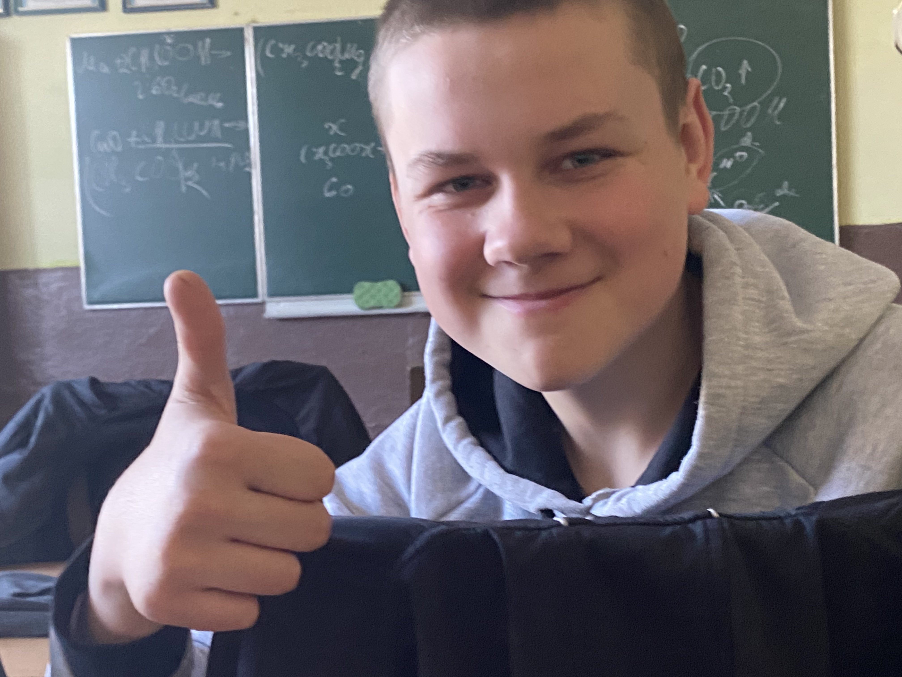

Проекти
Станом на 2021 рік дослідження OpenAI зосереджені на навчанні з підкріпленням (RL). OpenAI розглядається як важливий конкурент DeepMind .
Історія
У грудні 2015 року Сем Альтман, Грег Брокман, Рейд Хоффман, Джессіка Лівінгстон, Пітер Тіл, Ілон Маск, Amazon Web Services (AWS), Infosys і YC Research оголосили про створення OpenAI і пообіцяли виділити понад 1 мільярд доларів цьому підприємству.
Навички
У 2020 році OpenAI анонсувала GPT-3 , модель мови, навчену на великих наборах даних в Інтернеті. GPT-3 призначений для відповідей на запитання природною мовою, але він також може перекладати між мовами та генерувати зв’язний імпровізований текст. Також було оголошено, що пов’язаний API, названий просто «API», стане основою його першого комерційного продукту.
Про GPT
ChatGPT — чат-бот зі штучним інтелектом, розроблений лабораторією OpenAI[3]. Це велика статистична модель мови, оптимізована для ведення діалогів та відлагоджена завдяки технікам навчання з учителем та навчання з підкріпленням. В основі прототипу лежить модель OpenAI GPT-3.5 — покращена версія GPT-3.
Прототип ChatGPT було випущено 30 листопада 2022 року. Через детальність та ясність відповідей, його популярність виросла неймовірно швидко, хоча фактична точність цих відповідей підлягала критиці.
Після релізу ChatGPT оцінка компанії OpenAI виросла до 29 мільярдів доларів[4]. Лише за два місяці після випуску кількість активних користувачів перевищила 100 мільйонів — такий короткий проміжок став історичним рекордом серед користувацьких програм[5].
